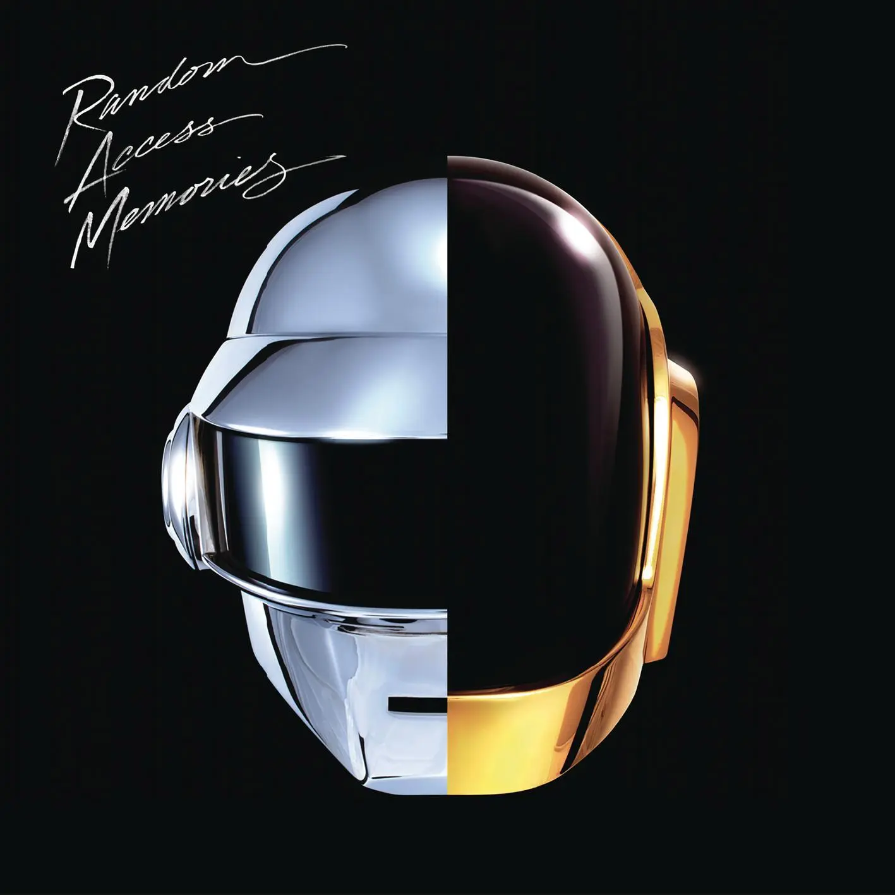
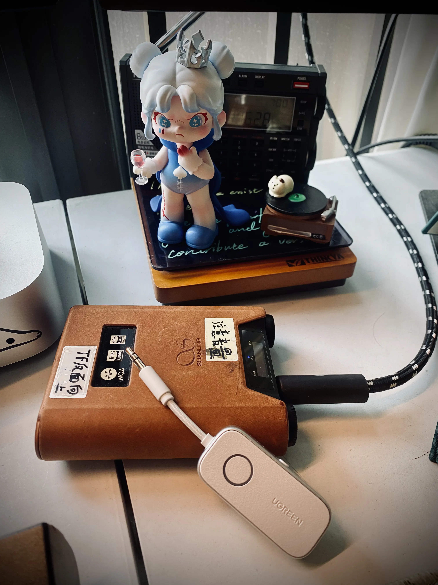
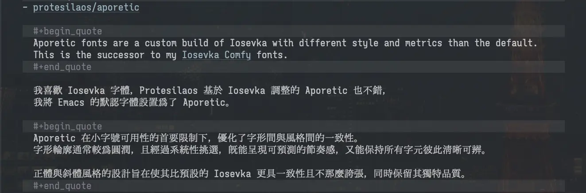

Zine#54
世界杯、純文本、隨機頁面、巫師三
🎶 Random Access Memories - Daft Punk
{kind=link}

When I was fifteen, sixteen, when I really started to play the guitar.
我十五六岁的时候，开始学习弹奏吉他
I definitely wanted to become a musician.
我就一门心思要当音乐家
It was almost impossible because it was, the dream was so big that
基本上没戏，因为这不是说说就能做到的
I didn't see any chance because I was living in a little town,
再加上我在一个小镇生活，就更没什么机会
was studying and when I finally broke away from school and became a musician.
但是我还是开始了，然后辍学走上成为音乐家的道路
I thought "Well, now I may have a little bit of a chance."
我想，这下应该有点戏了吧？
Because all I really wanted to do is music and not only play music but compose music.
但是我不止想演奏，我更想创作音乐
At that time, in Germany, in 1969-70, they had already discotheques
在那时候，60-70年代的德国，他们已经有了迪斯科舞厅
So I would take my car, would go to a discotheque, sing maybe thirty minutes
然后我就开车去找一个，献唱大概三十分钟
I think I had about 7-8 songs.
大约7-8首歌
I would partially sleep in the car because I didn't want to drive home
我不想开回家，有时候就直接睡在车里面
and that helped me for about almost two years to survive.
这样的日子大约持续了两年
In the beginning,
开始创作的时候
I wanted to do an album with the sounds of the 50s,
我想做个包含50年代声音的专辑
the sounds of the 60s, of the 70s,
加上60年代和70年代
and then have a sound of the future. And I said:"Wait a second,
最终创作出未来的声音
I know the synthesizer, why don't I use the synthesizer?",
我想我会用合成器，我干嘛不用呢？
which is the sounds of the future.
那就是未来的声音
And I didn't have any idea what to do
但是我并不知道怎么去做
but I knew I needed a click so we put a click on the 24 track
但我知道要把24个音轨中加入“click”(一种音色)
which was then synced to the moog modular.
才能与Moog Modular合成器同步
I knew that could be a sound of the future
我想这样应该有戏
but I didn't realize how much impact it would be.
但是我绝不会想到带来的巨大影响
My name is Giovanni Giorgio, but everybody calls me Giorgio.
我是Giovanni Giorgio，但是大家一般叫我Giorgio
Once you free your mind about a concept of harmony and of music being correct,
一旦你解放自己的思维，放下关于音乐的所谓“正确”的概念
you can do whatever you want.
你就做你想要做的
So nobody told me what to do and there was no preconception of what to do.
没人教过我，没有先入的观点，我才能创作属于自己的
這期分享一張電子樂専輯，Daft Punk 的 Random Access Memories ，封面歌詞選的是専輯里我比較喜歡的一首 Giorgio by Moroder 。
Daft Punk 我早有耳聞，也聴過一些他們的歌，但之前都欣賞不來，聴的不多。前陣子看了 Hopico 的直播，聊天結束後周杨不斷翻黑胶放歌切歌，聴著聴著就聴到了 Giorgio by Moroder ，Giorgio 有點年迈的聲音回憶著過往，當他說完「My name is Giovanni Giorgio, but everybody calls me Giorgio.」電子樂響起，我就被這首歌擊中了，開始體會到 Daft Punk 的好聴之处。之後也下載了他們主要的専輯都聴了聴，也都挺喜歡的，是好聴、耐聴的電子樂。或許你聴 Daft Punk 一開始也欣賞不來，那也沒關系，或許以後某天突然聴到了，會喜歡也不定，總之不用勉強自己。
Giorgio by Moroder 中 Giorgio 的录󠄃音大致可以分成三段，對應不同的年齡階段，录󠄃製時是用不同年代的麦克風录󠄃製的。編曲上也很丰富，有電子樂，弦樂，還有合成器，以及精彩的鼓點，風格上跨越了 Funk、欧陆电子音乐、爵士电钢琴与吉他演奏、电影感管弦乐、低音吉他独奏、摇滚吉他与 Acidic 电声合奏，虽然整首曲子有 9 分，但聴起來一點不無聊。录󠄃音的 Giorgio Moroder 是一位義大利作曲家和唱片製作人，被譽為「迪斯可之父」。關於 Giorgio by Moroder 也可以看看 Zora Ruen 寫的 Reflecting on “Giorgio by Moroder” After Daft Punk Break Up。
Random Access Memories 整張都蠻好聴的，如果喜歡 Giorgio by Moroder ，不妨把専輯找來聴聴。如果你想聴點東方風味的電子樂，也可以聴聴 YMO (Yellow Magic Orchestra)，他們的 BEHIND THE MASK 、 東風 、 中国女 都不錯， Multiplies 那張専輯也很好玩。
News | Article
On Listening to an Entire Album by Jeremy Friesen
Jeremy 收了一套不錯的音響設備，然後重新聴起了 CD，音樂讓他想起了一些人和事。聴 CD 會讓他能够完整地聴完一張専輯，而不是急著切歌，讓他重新找回了那種専心聴歌、欣賞一張専輯的心情。
流媒體確實很便利，也是因為便利，人們也變得没耐心，一首歌還没聴多久可能就厭了，不斷切歌；流媒體也不那麼注重専輯的概念，更多的是包含許多單曲的歌單。像是 CD 播放器，切専輯要換碟，這一點點的摩擦反而促使了人們去聴完一張専輯。

图1 山灵 H5 和綠聯的蓝牙傳輸器 我現在聴歌也更似向於聴専輯，當我聴到一首喜歡的單曲，我會把對應的専輯也找來聴聴，往往在専輯里找到其它喜歡的歌，也通過専輯介紹對歌曲多一些了解。
我也傾向於將専輯下載下來聴，我有一個播放器 (山灵 H5)，它可以讀取 TF 存儲卡， 256 G 的大小己經被我塞进去百來張専輯了，全都是 flac 格式的，也才用了一半左右的空間，平時就接到音響上聴，因為播放器操作起來不是那麼方便，很多時候我就是選張専輯讓它順序播下去，里面都是我喜歡的専輯，可以一直聴下去，也不會覺得厭。不過它有個缺點是不支持蓝牙發送，只支持接收，出門就只能用有綫耳機，僅管有綫可以无損，但不太方便，後來我買了個綠聯的蓝牙傳輸器（有點不穩定），現在也能連 airpods 聴了。
我也還是會用流媒體，主要是網易雲音樂，偶尔從每日推薦里發現一些新歌，有時出門想輕便點也能應付一下，更多時候還是用播放器聴下載好的専輯。
另見： 去营地整点 FLAC by Eltrac
- 學習的八個法則 by Wiwi
- 解釋（explanation）
- 示範（demonstration）
- 模仿（imitation）
- 重複（repetition）
- 重複（repetition）
- 重複（repetition）
- 重複（repetition）
- 重複（repetition）
四個沒用的音樂小知識 ✦BBP7✦ by Wiwi
沒用但有趣。
偷偷加入的功能 by Wiwi
Wiwi 給網站新增了「純文字版」，交互和閱讀起來都還不錯。
在 Zine#47::A small collection of text-only websites by Terence Eden 里我也提到過純文本頁面，當時也做了相關實現，讀者可以將 URL 的
.html後綴替換為.org就能得到原始的 org 文件，也是一種純文本格式，但這樣用起來還是有點麻煩，能够直接點擊打開會更方便。我的博客是用 org-publish 1构建的，之前一直不知道在:html-postamble(對應頁面的 Footer 部分) 如何获取頁面的 URL，看了 Wiwi 的文章後我也想做一個可點擊的連結，看了看相關代碼，發現可以傳入一個凾数，凾数里可以获取到頁面的 URL，於是現在你可以在頁面底部點擊連結，获取當前頁面的純文本格式了。考慮過將連結放在頂部，但從閲讀體驗上說，我認為我現在的頁面樣式比純文本更好，更易讀，我現在的樣式其實和純文本相近，也足够干净簡洁。覺得純文本比原頁面更好閱讀，可能是因為 HTML 本身設計得有些複雜，有太多干擾閱讀的元素，如果 HTML 本身足够簡洁，閲讀體驗還是优於純文本的。純文本大概也没那麼多人用，所以暂時還是先放在㡳部，有需要的話可以直接把滾動條拉到㡳部或點擊鍵盤上的 End 去到頁面㡳部找到純文本連接，不嫌麻煩也可以手動將 URL 中的
.html換成.txt或.org获取。Wiwi 的純文本是不包含連結的，從他的純文本中看不出哪些文字上有連接，他也移除了文本標記，不得不說，這樣閱讀起來更好，更清晰。我的純文本也移除了文本標記，但保留了連接，這樣如果讀者有需要也能找到對應的連結。不妨體驗一下純文本版本，有問題或建議歡迎給我發邮件。
那个从不看球的人开始看球 by Another Dayu
我不是足球迷，也不懂足球，但也愛看點球賽。喜歡的球隊是利物浦和拜仁，前者是因為 The Beatles，愛屋及烏；后者是因為喜歡隊標和球衣，從我喜歡的理由也能看出我是個偽球迷。
世界杯也看了，希望能进决賽的球隊都被淘汰了，葡萄牙、克罗地亚、埃及、挪威，球賽很精采，但可能實力和運氣都還差一點。阿根延、英格兰和法國是真厲害，西班牙感覺還差點，我覺得冠軍很可能還是阿根延。
一支球隊能挺进决賽，首先是本身實力就強，每個球員的能力、彼此之間的默契、战術的部置和执行、候补球員的停備等都是實力的一部分，进入四強的球隊國家本身也是足球盛行的國家，實力上也更有优势。其次就是運氣，但更重要的還是本身實力，實力強才能在機會來的時候把握住。
世界杯馬上就要結束了，今年看得還是挺開心的。儘管只有一個人在看，但看直播就感覺在和全世界的球迷一起看，直播也有魅力，永遠不知道下一刻會發生什麼，倒計時的絕殺、决定生死的點球都讓人激動。
請、謝謝、對不起 by YangBear
就拿最簡單的「請、謝謝、對不起」來說。大概是世上最無用的詞語。這些東西都只是讓自己好過。「請」情勒對方只好幫忙，「謝謝」後好像就一切都沒有發生過，「對不起」讓不原諒變成不大度。
You Must, You Must, You Must by Brennan Kenneth Brown
「Memento Mori」是一句著名的拉丁語：
「Memento」是「meminisse」（記住）的命令式，而「mori」是「morior」（死）的現在不定式。
這句話字面上的翻譯是「記住去死」或「留心死亡」。
翻譯有的譯作「記住，你將會死去」，有的譯作「記住，你必須死去」，但兩者給人的感覺是不同的，前者在陳述一個事實，後者還強調了去死是一種義務。
「必須」更接近斯多葛學派 (Stoics) 的原意。對於塞內卡 (Seneca) 和馬可·奧勒留 ( Marcus Aurelius) 來說，將死亡置於視野中的目的並非病態的預測，絕非如此。其核心在於，優雅地死去是一種修行，是一項與優雅地生活同等的責任。「必須」找回了那種「作為參與的必然性」：這不僅是會發生在你身上的事，也是對你的要求，而你如何面對它，則由你來回答。「必須」也呼應了古老斯多葛學派關於 ananke（必然性）的觀點 ⸺ 必然性是宇宙的秩序，而非你個人的不幸。
「將會」使死亡成為你個人的宿命；「必須」則使死亡成為萬物皆須遵循的法則，而你僅僅是無法例外。
memento mori.
memento amoris.
摘录
我必須死。我現在必須活著並自食其力。我必須允許失去的悲慟頻繁且誠實地在我的體內跳動。
任何沒有刻意關注的事物都處於流失的過程中。當我們長時間不練習時，技能就會喪失。不進則退。酸種麵包會變質，我們勞動的果實會腐爛，就像伊甸園的種子一樣。我們必須行動，我們必須急起直追。如果我不寫作，那麼當我離世時，那裡就沒有文字留下。正如艾略特 (Eliot) 在《荒原》(The Wasteland) 中提醒我們的：
I didn’t mince my words, I said to her myself,
HURRY UP PLEASE ITS TIME
我直言不諱，親自對她說：
快點吧，時間到了
較少被提及的是，我們的人際關係也並無二致。我們的社交紐帶正隨著時間流逝而衰減，就像物質在熵增中消亡一樣。我們始終處於失去所愛之人的過程中。人與人之間的連結始終需要維護、撫慰與滋養。
多麼奇特的刺痛感。苦澀的茶葉，在公園裡散步，女人們在那裡走來走去，談論著米開朗基羅。
正如我之前提到的，電影 28 Years Later 中出現了骨廟，而凱爾森博士在銀幕上向一個名叫斯派克的男孩解釋道：memento mori ，記住我們終將死亡，是的。但他還教了另一句話， memento amoris 。
記住，我們必須去愛。
An album for every year by Robert Lützner
一個不錯的博客寫作主題：
- 列出你出生以來每一年的其中一張專輯
- 該專輯必須是在同年發行的
- 專輯可以是你認為當年最棒的作品，或是對你有某種意義的
See also: An Album From Each Year of My Life by Aether Anne
Flight of the Bumblebee by David
對大黄蜂的觀察。
Coffee by Rachel
Coffee is so good! 我同意。
Sheep by Rachel
Rachel 的一段徙步見聞。
“Of the beginning”: decorative initials in Cardiff’s rare books by Ken Gibb
幾個世紀以來，中世紀的抄寫員會用精緻的開首字母裝飾手稿，這些字母通常塗上鮮豔的色彩並以金箔點綴。卡地夫（Cardiff）的許多早期印刷書籍也包含類似的裝飾性首字母，有些是印刷而成的，有些則是手工添加的。這些美麗的字母具有實用功能，能幫助讀者在複雜的文本中導航；它們比其餘文本更大且更華麗，可用於標記單詞、章節或段落的開頭。「Initial」（首字母）一詞本身源自拉丁語 initiālis，意為「開始」。
文章分享了一些書上的裝飾首字母，蠻好看的，也挺有趣。中文書籍似乎没有這種首字裝飾的文化，如果在網頁上實現的話，看起來用圖片是最簡單的。
好奇中文有没有這種文化，於是問了 Kagi Assistant，在它的 thinking 里可以看到它使用的搜索關鍵字，如果是我自己用 Kagi 搜索，我可能想不到這些關鍵字，也是可以从 Kagi Assistant 的使用的搜索關鍵字里學到一點搜索技巧。
Leaving my garden for a week by Frances
有個花园真不錯。
- A decade of Lily by Alex
- In which poetry saves my soul by Annie
Photographers who inspire me by V.H. Belvadi
當你看一張照片時，不應該問自己這拍的是什麼，或者其中的幾何構圖在哪裡，以便為欣賞這件作品尋找某種理由。相反，你應該去 感受 一張照片，如果你感覺自己喜歡它，那就是你對任何人所需要做的全部解釋。
Hemispheric Views June-Boree 2026 by Robb Knight
June-Boree 是一個橫跨整個月份、由 30 個獨特挑戰組成的挑戰，這篇文章記录󠄃了作者的进度，看起來蠻有趣的。
Why I Stopped Arguing With People by CongWang
推薦看原文。
作者减少与人爭吵，原因是
正確並不總是好事
有人正確就要有人錯誤，這會造成對立，也沒有解决問題。
大多數爭論關乎自我，而非觀點
如果對方不是在和你針對觀點討論，而是在捍衛自我，你們其實不在爭論，這衹是一場關於誰的自尊能保持完好的戰鬥。
人並非理性的動物
當對方用感受而不是理性、邏輯与你爭論，也是無意義的。
你是在用證據去對抗感覺。證據無懈可擊，但感覺根本不看證據。
糾正他人鮮少能真正幫助他們 & 唯一的例外：當他們主動請求時
衹有當對方主動向你寻求帮助時，你的建議對方才會聴进去。
大多數人根本不從建議中學習，他們是從後果中學習。他們必須親自碰過火爐才行。言語只是耳邊風，痛苦才會刻骨銘心。
另見： Since You Asked by Musings from a Tangled Mind
你只能改變你自己
我們衹能改變自己，或許也能影響他人。
結合上面說的「糾正他人鮮少能真正幫助他們 & 唯一的例外：當他們主動請求時」，當自己主動詢求帮助時，自己往往能聴进去，所以，保持謙遜，放下自我意識 (Ego)，多去詢問，認真傾聴，去改變自己，變得更好。
Unicorns and Magic Wishes by Marcia Mayeda
一個温暖的故事。
The unhinged cake decorators at a Missoula Walmart by Emma McDowell
有趣的蛋糕裝飾。
Over/Under #72 with Yannick Schutz by Hyde
喜歡關於冲印照片和 ipod 的話題。
Over/Under 是一個人物訪談系列，類似的還有 People And Blogs，都是發現新博客的好去处。
This Buried Apple Feature Turns an iPhone Into the Perfect Kids’ Dumb Phone by Jeremy White
家長擔心孩子太小，接觸太多社交媒體不好，但像是用屏幕使用時間去限製使用又很容易繞過限製。作者發現 iPhone 的 Accessibility 下 的 Assistive Access 功能正好能滿足需要，能限製使用的應用，也不容易繞過，適合作為儿童模式。如果想限製自己手機的使用，也可以用用看。
Rejection Emails Should Be Written Like Error Messages by Justin
如果我面試不過就直說，而不是給我發一兩百字的邮件，把壞消息藏在第二段的中間，還要我看半天。不，把重要信息放在開頭，別過度強調禮貌和友善而忽視了清晰度。
我想在拒絕別人時也應該如此，不用含糊其辭，直接告訴對方自己的决定，對彼此都更好。
讓拒絕來得更直接些吧。
TRAIN TRIP 的产品设计细节 by Bluepikachu
Train Trip 是一個收集日本 JR 站数字印章的應用，印章蠻好看的。國內也可以搞一個類似的產品，一定很多人去打卡。
可以聴著 Yamanote.fun 閲讀，里面是日本 JR 里的進站音樂、廣播、開關門提示音和列車行駛聲 :)
-
索尼計劃 2028 年取消生產實體碟，以後買游戏，買的就不是所有权而是使用权了，真是開倒車。實體版買了可以二手賣了，也可以分享給朋友，但数字版是和帳號強綁定的，就沒法再流通了，数字版還要定期聯網驗証才能玩，唉。
See also: 【STN 快报第 8.5 季 13】在大学打游戏将不再被称为不务正业 (31:15) by STN 工作室
{kind=link}
Cool Bit
-
手寫的博客，酷！
-
一本製作精良的雜誌，主要是關於游戏的。
做得好！你發現了 ChoiceBeat 的秘密基地，這是一本關於視覺小說與互動式小說的雜誌。本刊物涵蓋了來自世界各地、以文字為主且注重選擇的數位遊戲。深入探索其中的文章、評論、訪談，以及任何與新舊視覺小說、互動式小說、敘事遊戲、全動態影像（FMV）遊戲及任何相關主題的內容。
-
Tangara 是一款可攜式音樂播放器。它透過 3.5mm 耳機插孔或藍牙輸出高品質音訊，擁有優異的電池續航力，並搭載了強大到足以支援任何音訊格式的處理器。它同時也是 100% 的開放硬體，運行開源軟體，這使其易於自定義、維修與升級。無論你想聽什麼、想怎麼聽，Tangara 都能滿足你的需求。
-
一份周更的期刊，一個巨大的 兔子洞，比我不定期更新的 Zine 內容還多，內容也很有趣。去訂閱 WEB CURIOS 吧！
如果還嫌不够看，你可以在 Thoughts on making zines after 7 months by Juha-Matti Santala 找找感興趣的 Zine。
About 里的一些 FAQ 也適用於我寫的 Zine：
為什麼內容這麼長？
聽著，網路上東西就是這麼多，這不是我的錯。
說真的，你到底想讓我怎麼讀完這堆東西？
你不必全部讀完！把 Web Curios 想像成一個菜色過於豐富的自助餐 ⸺ 你不必每樣都吃，而且很多人會說嘗試吃光所有東西是不明智的。略讀一下，點擊任何聽起來感興趣的內容，看看它會帶你到哪裡。
如果只有連結，去掉那些令人厭煩、過度修飾的散文風格，這東西會好得多。
- 這不是個問題
- 這些文字是你免費獲得這些內容所付出的代價；接受它吧。
The 2026 Milky Way photographer of the year
年度銀河攝影，欣賞一下美丽的銀河。
-
作者用一張圖描述一首歌的印象，蠻有趣的。不過大多数歌我都不熟悉，不能看懂作者表達的意思，能看懂的是 The Beatles - Hello, Goodbye，蠻形象的。
-
好玩！用鳥的聲音來組成旋律。
-
Roland50 Studio 是由 Yuri Suzuki 和 Roland 共同創建的線上音樂創作平台「808303.studio」的重大更新。
這是一個具有專業音質的線上音樂介面，可以記錄您的傑作，並讓您透過社群媒體、通訊軟體以及下載的方式分享您的創作。
好玩。頁面提供了好几種合成器，瞎點几下弄個節拍也挺好聴的。
-
聆聽維基百科最近更改饋送的聲音。鈴聲表示增加，撥弦聲表示刪減。音調隨編輯大小而變化；編輯規模越大，音調越深沉。
可以當作白噪音聴。
-
一個游戏 Demo，玩著有點上頭。
我和我的伴侶非常喜歡散步。因此，我想製作一款受我們日常漫步啟發的小遊戲！這基本上是我們一年來日常散步的精華版。
我們每天做的平凡小事，像是買杯咖啡或走下樓梯，在這裡都變成了互動式的迷你場景。遊戲中共有超過 40 個場景等著你去發現！
遊玩這些場景可以獲得積分，你可以用積分來解鎖新的場景。
-
組詞鋪路，單詞量积累够多的話可以玩玩看。
1930s Equivalent of Car GPS Navigation
1930年代相當於汽車 GPS 導航的裝置，還挺有趣。
Tutorial | Resource
-
Standard Ebooks 是一個由志願者驅動的專案，製作公有領域電子書的新版本。這些電子書經過悉心排版、開源、不受美國版權限制且完全免費。
-
收集維多利亞時代和法國浪漫主義插圖的網站。
Redirecting all reddit links to "old.reddit.com" : firefox
如果你更喜歡用旧版 Reddit 可以設置一下。
-
The Creative Independent (TCI) 是一個不斷成長的資源庫，為創意人士提供情感與實務上的指引。我們由公益企業 Kickstarter 資助，且不含任何廣告。我們透過訪談、智慧結晶和指南，由執業藝術家（包括作家、音樂家、設計師、視覺藝術家等）親自講述，揭示創意生活中的磨難與喜悅。我們的目標是啟發並壯大創作社群。
-
Aporetic fonts are a custom build of Iosevka with different style and metrics than the default. This is the successor to my Iosevka Comfy fonts.
我喜歡 Iosevka 字體，Protesilaos 基於 Iosevka 調整的 Aporetic 也不錯，我將 Emacs 的默認字體設置為了 Aporetic。
Aporetic 在小字號可用性的首要限制下，優化了字形間與風格間的一致性。字形輪廓通常較為圓潤，且經過系統性挑選，既能呈現可預測的節奏感，又能保持所有字元彼此清晰可辨。
正體與斜體風格的設計旨在使其比預設的 Iosevka 更具一致性且不那麼誇張，同時保留其獨特品質。

图2 aporetic 字體示例，其中英文字體是 aporetic，中文字體是 I.Ming。 -
一個歷史悠久的學術網站，了解更多。
- How The Heck Do Solar Panels Work? by Shri Khalpada
A Full Guide to Properly Delete Corporate Social Media Accounts by Brennan Kenneth Brown
如果你打算刪除 Facebook、Messenger、Instagram、WhatsApp、Threads、X、Reddit 和 Discord 的帳號，這篇文章提供的建議或許能帮到你。
How to ask for help from people who don't know you by Pradyumna Prasad
摘录
你該如何向人尋求幫助？只有一個原則： 設身處地為對方著想。所有良好的溝通都建立在對讀者心理的理解之上。因此，當你向不認識的人尋求幫助時，我有幾點建議。
要記住的一個準則是：幫助是關於「人」的，其次才是關於「項目」。當你向某人尋求幫助時，他們是否願意協助你的項目，取決於他們是否想幫助你。因此，你應該清楚地表明你是一個值得幫助的人。展現自己值得幫助的最有力方式之一，就是 證明你是一個認真的人 。
我最後一個啟發式原則比較特別：讓對方容易說「不」。你可能認為最壞的結果是被拒絕，但最壞的結果其實是對方在壓力下勉強答應。如果你被拒絕了，最好的回應是感謝對方的時間並繼續前進。讓你的訊息帶有情感愧疚或長期糾纏，都不會達到你預期的效果。你的強迫會毒害你與這個人的關係，而你卻沉浸在艱難獲勝的虛假光輝中。一個咬牙切齒幫助你的人，永遠不會再幫助你第二次。即便如此，那種幫助也只是為了擺脫你製造的義務而敷衍了事。相比之下，自願提供的幫助是毫不費力的，就像你為某人扶住門一樣。心甘情願的幫助能讓你的良心保持清澈，免於給人壓力的負擔。而發自內心的幫助，才是雙方共同為目標貢獻力量的關係基石。
{kind=link}
Code Related
what happened to the frontend by David Poblador i Garcia
前端技術發展回頋，推薦一讀。
How npx / npm exec works By Samiullah Khan
npx create-react-app my-app等同於npn exec create-react-app my-app。它們都會從
./node_modules/.bin/*里找create-react-app，找到了就運行；找不到就會詢問是否下載，下載的依赖不會添加到package.json里。Getting Started with Anchor Positioning by Josh W Comeau
Anchor Positioning 的主要功能在 2026 年己經是 Newly available 的狀態了， Josh W Comeau 介紹了它的基本使用，其中關於 overflow 的坑可以留意一下。
The Goldilocks customizable select height by Jake
讓自定義 Select 的尺寸在各種场景下表現良好，推薦一讀。
The Shifting Line Between CSS States and JavaScript Events by Daniel Schwarz
文章介紹了很多偽類，可以用來給某些頁面狀態設置樣式，在没有這些偽類前，往往需要依赖 JS 實現。
- tmux trick #3: open URLs without the mouse by | Sebastiano Tronto
Dark mode with web standards by Ollie Williams
給網站添加 Dark mode 的一些技巧。
Why Separating Themes from Modes Transforms Your Design System by Stuart Robson
作者認為應該將 themes 和 modes 分開，前者是調色盤；後者是亮度偏好。拆分是為了更好的維护，减少重複測試。拆分了也能給用戶更多選擇，讓用户自由組合 modes 和 themes。
不過我認為并不能减少需要的測試，不是定義好了 modes 之後，改變主題色就只需要留意主題色，還需要留意主題色和 modes 組合後對比度是否合适。
如果需要系統需要提供不同主題、不同 modes，或許可以試試。
Part2: Modes and Themes That Stick - Building a Persistent Toggle Solution
最後作者也放弃了提供主題和 modes 的切換，因為他發現用的人并不多。我想也是，我覺得個人網站没必要提供不同主題色的切換，讀者真的有那麼在意顏色嗎？（如果你在意請告訴我）相比之下 modes 是更重要的，是有必要提供一個切換選項的，以滿足不同人的對比度需要。
主題在應用上更有價值，例如編輯器、手機上的 app，因為用户天天看，可能會有點厭倦，提供主題可以帯來一點新鮮感。
An animated radial gradient mask over text in CSS by Cassidy Williams
Cool，可以了解 mask 的使用。
- Fixing full-bleed CSS by David Bushell
I think many people misunderstand the purpose of code review. by Mark Dominus
我认为很多人误解了代码审查的目的。代码审查的目的不是让审查者去发现漏洞，当然也不是要他们确保代码没有漏洞。任何依赖代码审查来发现漏洞的人都在自欺欺人。正如现在人人应当知道的，通过审查代码一般来说无法找出所有漏洞。
代码审查的主要目的是找出那些将来「难以维护」的代码。审查者查看代码并试图理解它在做什么以及如何做。如果他们无法理解，那就意味着将来维护会很困难，应当趁原作者还熟悉时现在就修正它。
An interactive introduction to the terrific experience of rendering Arabic typography and its technical debt by larrasket
關於阿拉伯語的排版，以及它背後的歷史故事。
Making a Shuffle Button by Jim Nielsen
用一個單獨的頁面實現隨機文章的功能。
在 Zine#50::Resurfacing posts by Herman 中 Herman 建議撈一下以前的文章，他也給 Bear 添加了一個 隨機頁面，我也挺認同他的做法，正好 Jim 分享了一個不錯的做法，現在我的博客也新增了一個隨機功能，你可以在頂部导航里找到。大體上是按照 Jim 的做法做的，不過我將
location.href = "ramdom.html"換成了location.replace = "random.html"，避免在返回/後退時停留在了隨機功能的中間頁面。- What's new in ECMAScript 2026 by Paweł Grzybek
A bug which only affected left-handed users by Terence Eden
一個僅影響左撇子用戶的錯誤，修複得好！總是有一些沒考慮到的邊緣場景。
Get Ready For the Powerful CSS border-shape Property! by Temani Afif
期待可用的一天，能製作好看的邊框。
a software engineering interview question I like: computing the median by Kris Shamloo
好的面試問題是一些看似簡單，但能從多個角度深入探討核心主題的問題。
Just Fucking Use Go by Blain Smith
嘿，蠢貨。你知道什麼東西兩秒鐘就能編譯好、部署時只需一個二進位檔，而且在凌晨三點某個間接依賴被從 npm 撤掉時不會當場崩潰嗎？就是 Go。就像 HTML 自從該死的網路誕生以來就一直待在那兒，等著你停止把前端搞得過度複雜一樣， Go 也已經在那兒待了十幾年，等著你停止把後端搞得過度複雜。
See also: Just fucking use HTML by kyrylo
這熟悉的大量 fuck 的文字，果然和 This is a motherfucking website. 有關。
I finally used GSAP… and I get the hype now by Kevin Powell
可以了解一下 GSAP 的使用。
AI Related
Better Models: Worse Tools by Armin Ronacher
模型商針對自家工具訓練模型，导致了用戶在工具調用時生成了并不存在的的參数。更好的模型可能會导致更差的工具。
Rewriting Bun in Rust by Jarred Sumner
前陣子 Bun 的維护者用 Claude Fable 5 將 Bun 從 Zig 重寫為 Rust，這篇文章是對迁移過程的回頋。整個迁移才花了 11 天，不過 token 花費不少，用了約 165,000 美元。目前迁移後的版本已經用在 Claude Code 里了。
Claude Code v2.1.181（6 月 17 日發布）及更高版本已使用 Bun 的 Rust 移植版。 Linux 上的啟動速度提升了 10%，但除此之外，幾乎沒人察覺到變化。平淡穩定就是好事。
這次 Rust 重寫工作，如果由一組擁有完整代碼庫背景知識的工程師來完成，通常需要一年的時間。而現在，僅憑 1 名工程師使用 Fable 並密切監控 Claude Code，我們在 11 天內就實現了從開始到所有平台測試套件 100% 通過。
與一年前相比，現在的一名工程師能做的事情要多得多。
另見： My Thoughts on the Bun Rust Rewrite by Andrew Kelley
Andrew Kelley 是 Zig 軟體基金會主席兼首席開發者，他對此有些異議。
這篇部落格文章寫得非常專業。這簡直就像是一家萬億美元公司的行銷部門在這篇文章上押注了巨額資金。
[…]
發布數百萬行未經審查程式碼的理由是測試套件足以捕捉所有問題。那麼，為什麼你又說 Zig 程式碼中有這麼多惱人的錯誤呢？測試套件足以捕捉所有問題的說法怎麼了？它不足以捕捉 Zig 程式碼中的錯誤，卻足以捕捉 100 萬行未經審查的劣質程式碼中的錯誤？
效能提升歸功於 LTO，而 Zig 在 Bun 存在的整個期間都支援 LTO。它曾經是預設啟用的，直到我們遇到太多 LLVM 錯誤，而這些錯誤同樣會影響 Rust。我們可能曾試圖建議你嘗試啟用它，但你沒聽。該死的，我們的建議可是很專業的！
- 被 Fable 挫敗
- 当编程变得不再有趣 by onevcat
- 被 Fable 抛弃的人 by Ke Fang
Select your starter class by David Bushell
冒著掃大家興的風險，我想說明一下我在這場「垃圾內容末日」中觀察到的三類 AI 使用者，這應該會有所幫助。你可能會想：「嘿，這些角色設定怎麼都是負面的！」 ⸺ 你完全沒說錯！
角色的切換不依赖 JS，干的好。(你說我怎麼知道不依赖 JS？因為我 默認禁用了 JS。)
- Introducing the Safari MCP server for web developers
Understanding is the new bottleneck by Geoffrey Litt
這就是另一個答案出現的地方：我們可以為了參與而理解。
你可以學習代理人正在做什麼，以確保你能成為創作過程中的積極參與者。這就是為什麼這很重要……
這絕不僅僅是一個循環！一個專案是與代理人進行無數次循環的過程。
而你對系統的理解，正是你提出下一個點子來演進系統的能力之一。
你的腦海中需要有一套豐富的概念，才能創造性且流暢地思考如何推動事物。如果你缺乏這種流暢度，你參與專案的能力將會受到極大的限制。
The end of the working writer by Teddy (T.M.) Brown
有時候，我認為我們身為作家，過度高估了人們對寫作質量的在意程度，除非是在小說、評論和敘事新聞等特定領域。事實上，世界上產出的大多數文字並非因其質量而具有價值，而是因其「存在」本身。白皮書、產品文案、SEO 博客文章 ⸺ 這些都是高度商業化的寫作，旨在服務於一個特定目的：買這個，別買那個。這類寫作本質上是一種產品，而這類範疇中的很大一部分已經是由作家使用 LLM 創作出來的了。正如 Joe 所言，同樣的情況也將開始發生在我們日常生活中必須往來的瑣碎便條上：確認郵件、感謝信、預約及更改行程。我無法想像使用 AI 來處理這些事情，但我也認為，大眾寧願點擊一個按鈕來告訴同事自己會遲到 5 分鐘，或是取消餐廳預約。寫作對我來說極其重要，但這並不代表它對每個人都同樣重要。
人們可能并不那麼在乎質量，不要求很好，足够好、看得過去就會有不少人接受。在沒有 LLM 之前，許多由人創作的內容本就是沒人在乎的東西。
A global workspace in language models by Anthropic
告訴 Claude 避開某個想法，反而會在某種程度上喚起該想法，這與人們被告知不要去想白熊時的情況非常相似。
-
Vibe-coded 產品醜得千篇一律：藍紫漸變、發光玻璃卡片、每行都有表情符號、什麼都貼個徽章。這是機器在沒有品味卻想顯得令人印象深刻時會採用的東西。它太常見了，以至於你已經不再注意到它。這本手冊讓它重新變得刺眼，然後教你如何將其剝離。
- BuilderIO/skills
- /visual-plan、/visual-recap
Tool | Library
-
Web Component for generating QR codes.
-
CLI to generate image snippets from code files, stdin, or inline source. Uses Shiki-based syntax highlighting with a built-in fallback tokenizer.
-
Makes PDFs look scanned (CLI or in the browser via WASM).
-
Libreture 是一個電子書雲端圖書館，用於儲存您所有無 DRM 的電子書、數位漫畫、雜誌等。以最完美的姿態查看您的書籍，並隨時存取閱讀。
它是電子書閱讀器界的 Dropbox 結合 Goodreads！
Libreture 是備份電子書的完美選擇。建立您的免費圖書館，上傳您的書籍，再也不用擔心電子書店關閉而丟失您的電子書。
-
Local-first, encrypted password manager.
-
Beautiful terminal UI components, built on Ink and OpenTUI.
-
Display images in the terminal.
-
The open-source AI voice studio. Clone, dictate, create.
-
Wander 是一個小型、去中心化且可自託管的網絡控制台，讓您網站的訪客能夠探索由獨立個人網站主社群所推薦的有趣網站與頁面。
每個 Wander 控制台都會載入由 Wander 社群推薦的個人網站和頁面。此外，每個 Wander 控制台都可以連結到其他 Wander 控制台，形成一個輕量級、去中心化的網絡，用於瀏覽個人網站的小眾網絡。
Emacs
- Projectile 3.0 by Bozhidar Batsov
- Projectile 3.1 by Bozhidar Batsov
- Emacs anniversary by Elias Storms
- One-Line-Per-Day Diary in Org-mode by Wai Hon
- How I built a GPU backend for Emacs by Andros Fenollosa
- Scheduling Future Tasks in Emacs by Charles Choi 최민수
- In Emacs, Everything Looks Like a Service by Charles Choi 최민수
- Ten Years Of Emacs by Hristos N. Triantafillou
- Emacs disabled Commands by Raymond Zeitler
- Automating Emacs Screenshots by Bozhidar Batsov
- Org mode beginning at the basics
- svg-margin: Better Gutters for Emacs by Charlie Holland
That Moment Dired Eats Your File and why Trash Saves You by Emacs Dwelling
(setq delete-by-moving-to-trash t)添加上面的配置讓 Emacs 刪除文件時把文件丟到回收桶，万一誤刪就還有补救機會。
An alternative to Webmentions for the Emacs Carnival by Andros Fenollosa
用 tanrax/org-social.el 發送到 tanrax/org-social。
Org Social is a decentralized social network that runs on an Org Mode file over HTTP.
VC Shuttle: Advice-Based Git Sync for Air-Gapped Emacs by Emacs Dwelling
在离綫环境下用 Emacs 完成 Git 的遠端同步操作 (通過 USB)。
- Une navigation simplifiée sur mon blog grâce à EWW (et Emacs !) by Sacha Chua
- Emacs: write with input method (e.g. French) and Jinx for spelling by Protesilaos
- Replacing Flyspell with Jinx by Bozhidar Batsov
- Reading syntax-ppss State Without the Magic Numbers by Bozhidar Batsov
- Org mode as a gantt chart generator by Chris Maiorana
Emacs: global keybinding overrides by Protesilaos
在 Emacs 里綁定快捷鍵有時會被特定 mode 的快捷鍵覆盖，原因是特定 mode 的优先級更高， Protesilaos 分享如何解决這個問題，他的做法是定義了一個 minor mode，在 minor mode 中重新綁定快捷鍵使其优先級更高。這樣的好处是，因為 minor mode 的快捷鍵优先級最高2，在任何其他 mode 中都能覆盖。
Learning Vanilla Emacs from Scratch with Prot as a Neovim User (1:54:03) by linkarzu and Protesilaos
See also: Emacs for beginners with Christian Arzu (@linkarzu on YouTube) by Protesilaos
-
方便在 Emacs 和文件管理器之間相互複製。
-
High-performance TRAMP backend using JSON-RPC instead of shell parsing.
-
An all-in-one document reader for all formats in Emacs, backed by MuPDF.
Denote Journal (denote-journal.el) by Protesilaos
一個 Denote 的擴展，用於寫日記。
-
Ultra-minimalist presentation minor-mode for Emacs org-mode.
一些话 | 摘抄
The year is 2063 and you were never interesting. by lizleatrice
你一生中最伟大的恋情是……这个。坐在黑暗中，鼻子离屏幕六英寸。你从未分离过，从未休息过。刚开始时，它来得缓慢而坎坷。但到二十五岁时，它已将爪牙插进你身上。到三十岁时，它填满了你生活中的空白处。而你从未放松过。它完全吞噬了你，而这种算计越来越多。以每天七小时计算，到这个年龄，你有十五年的生命都在屏幕前度过。
Is the Juice Worth the Squeeze? by Brennan Kenneth Brown
這是新一天的開始。我被賦予了這一天，隨我心意去使用。我可以虛度它……或者將它用於善途，但我今天所做的一切至關重要，因為我正用生命中的一天來交換它！當明天到來，這一天將永遠逝去，取而代之的是我用它換來的東西。我希望那是收穫而非損失；是善而非惡；是成功而非失敗；如此我才不會後悔為此付出的代價。我會試著只為了今天而努力，因為除非你停止嘗試，否則你永遠不算失敗。
A Temptation Island il tradimento sembra l'unico vero motivo per lasciarsi (ma non è così) by Elisabetta Moro
當然，肉體上的背叛確實具有一定的殺傷力。專家解釋道：「對於受害者而言，這不僅僅是情感上的創傷，更觸及了信任、獨佔感以及被選中的需求，且往往會打擊自我形象。它質疑的不僅是這段關係，還有這段關係如何支撐起內心的某種平衡。這也是為什麼對許多人來說，單憑這一點就足以結束一段感情。」此外，還有媒體對這類分手方式的渲染：無數電影、書籍、論文、影集和電視節目都將背叛分析為一段關係中最大的悲劇。 Gasperini 博士證實：「在他人面前，甚至在自己面前，說出『他背叛了我』時不會感到內疚。而『我們不再相愛了』、『我感到心力交瘁』、『我們變成了陌生人』這些真相則顯得不那麼明確、不那麼具戲劇性，且涉及雙方的責任。相反地，背叛打破了連續性，產生了『之前』與『之後』的斷層，讓那些直到那一刻仍試圖淡化危機或將其與他事混淆的人，也能清晰地看見危機。」
Our Era’s Unfortunate New Love Language by Sara Delgado
許多浪漫的情景，無論是陳腔濫調還是其他，都涉及分享的行為，無論是跳進同一輛計程車、擠在同一把傘下，還是不經意地吸入同一根義大利麵。在所有這些情況下，效果基本上是一樣的 ⸺ 透過某種程度的慷慨或殷勤，加上純粹的身體親近來建立親密感[…]
多媒体
视频
陶喆和周杰伦在日本唱片店能卖多少钱? (23:51) by HOPICO
又推薦了一大堆歌。
- 这 20 年最火的女主角，藏着我们不敢说出口的欲望 (13:12) by 切片计划
音乐
- 🎶 Random Access Memories - Daft Punk
🎶 手接我的回旋镖 - 张醒婵
散步時完整聴了一遍，不是很喜歡，但専輯聴下來是有概念設計的，我會變干净 像是一個分割綫，把専輯分成了兩部份。前面的部分聴著有點壓抑， 我會變干净 最後大概是跳楼了，而後半部分聴起來更温暖上扬一些。最喜歡的是 那就出去走走 。
- 🎶 天使音乐 - 汪川
游戏
很不錯的游戏，這是 2015 年發行的游戏了，現在玩也不覺得過時，也因為是老游戏，趁著打折，在 PS5 上用很低的價格就買到了，還包含了兩個 DLC (Downloadable content)。
在這個現代電視時代，保持耐心是有回報的。等到故事講完，再按照自己的節奏享受它。做一個耐心的電玩玩家也有好處。不要預購炒作。不要在發售時玩充滿漏洞的爛攤子。等個一兩年，用一半的價格玩一款完成度高的遊戲。
The Patient Programmer by David Bushell
游戏的劇情是一大亮點，有很丰富完整的劇情，玩起來像在看電影一樣。
游戏的世界観和 指环王 類似，有精灵、矮人、女巫、獵魔人、各種魔物、魔法、法術等，時間大概是中世紀，還在用劍、弩等冷兵器, 地點以歐洲大陸為基礎，主要以波蘭、阿姆斯特丹和斯堪地那維亞為靈感來源。各種元素整體給人營造了一個如指环王般的奇幻而又真實的世界。
游戏剛開始玩我其實没玩进去，一方面是在這之前我主要在玩死亡擱淺 1，對比之下能感覺到巫師 3 画質上的差距，看起來有點古早；另一方面，雖然游戏開始的劇情挻吸引人的，但游戏開始的教學太多了，一堆按鍵，一上來就給玩家比較大的心智負擔，也讓我沒馬上玩下去。後來實在無聊就耐著性子過完教程，直到接了第一個任務，才終於開始感受到游戏的魅力，越玩越喜歡。
游戏的難度不高，不要求很高的操作，而且它也提供了難度選擇，最低難度是「我只想看劇情」，我選的是「想出點汗」，這樣在冥想時可以回血，玩起來就很輕鬆。角色的等級、裝備、物品都不太重要，只要會閃避，大多数敵人都能打過去，更重要的是合理用法印、劍油等去克制敵人，打起來就會相對輕鬆。游戏的重點還是在劇情，而不是打鬥。
游戏里的對話也做得不錯，有的會將你置於一個兩難的境地，不知道選哪個好，是殺了對方還是放他一馬？對方的話可以相信嗎？不同的選擇有的會影響後面的劇情，例如血醒男爵那一章，如果選擇放過树精，相信树精，那麼树精恢複自由後就會屠村，它確實也會救孤儿，但最後會导致男爵妻子死去，而男爵也會自殺。而如果選擇殺了树精，劇情走向也會不一樣。得知树精屠村，又导致男爵自盡，還是會有點後悔這個選項的，但另一個選項會讓孤儿們都死去，也會後悔，真是「世間安得双全法」，總歸是要有所取舍的。而有的選項是有倒計時的，強迫你快速做出决定，容不得你多想。許許多多的决定讓玩家深入地參与到劇情的發展里，會讓人更有參与感，更沉浸，也會和里面的⻆色產生更深的聯系。玩到後面我才想起來我是可以存檔的，在一些關鍵劇情前可以提前存檔，萬一後悔選擇，讀檔重來就好了。
游戏里還有一個好玩的牌類游戏叫「昆特牌」，我一度沉迷到处收集昆特牌，連主綫都放一邊了。劇情里還有昆特牌大賽，我還贏到了冠軍，可惜只拿到了一半的奬金，不過也是很大一笔錢了。游戏里搞錢也不太容易，賣物品賣不了多少錢，似乎在不同地方、和不商人售賣，能賣出的價格是不同的。比較能賺錢的路子是接獵魔任務，也就是斬妖除魔，打打打，也是提高經驗值比較快的路子。
游戏還做了中文配音，也是好評，我一般更傾向於原聲，但巫師三的中文配音也做的很好，聴著不會覺得別扭，能聴懂周圍 NPC 的對話，不用總是看字幕，也讓游戏體驗好很多。此外音樂和環境光影做得也很好，晨光和日落都很有感覺。
不過偶尔也會有點 bug，我經歷過几次卡死，很關閉游戏重进才能恢复。有時一些開關也触發不了、潜水沒反應、NPC 穿模，不過影響不大，實在不行重新讀檔、冥想、重进游戏也能恢复。
游戏還沒通関，暂時玩到第一次和狂獵大戰完，有一種暂告一段落的感覺，對游戏的熱情下去了一些，後面再慢慢玩。 2027 年巫師三還有一個 DLC： 《巫师 3：狂猎 — 旧时曲》，也期待 《巫师4》 能早日完成開發。類似的游戏可能是 天國拯救，哪天降價便宜了也找來玩玩。
如果你喜歡指环王、中世紀、冷兵器、RPG，我想你也會喜歡玩巫師三的。